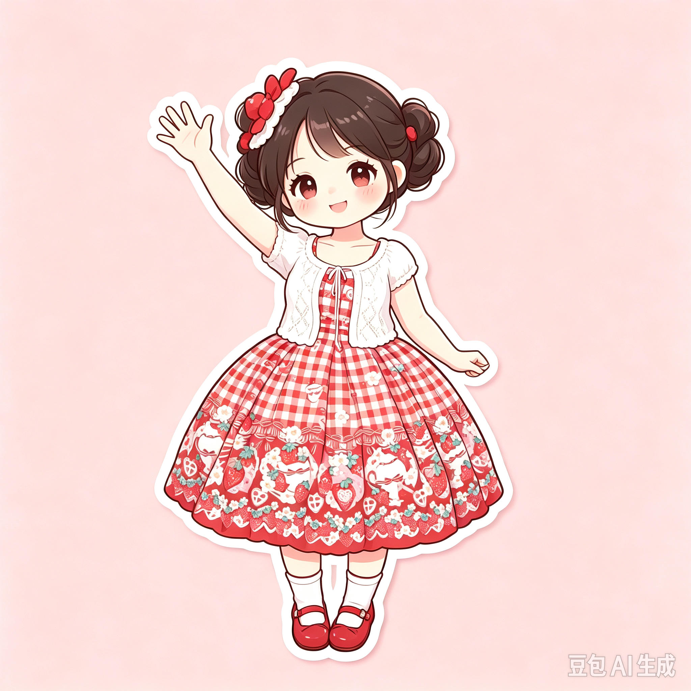
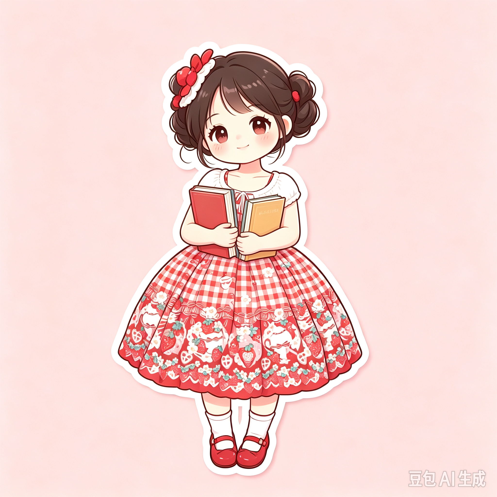
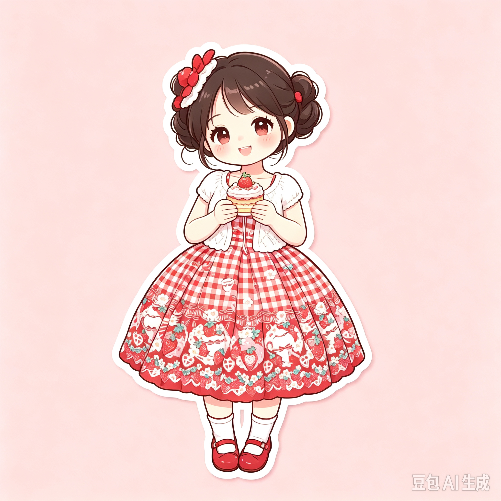
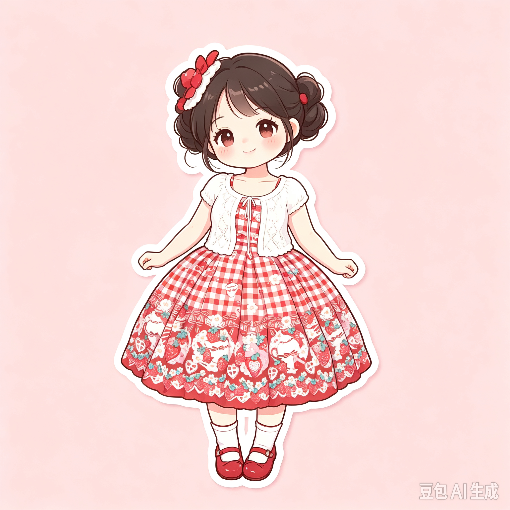
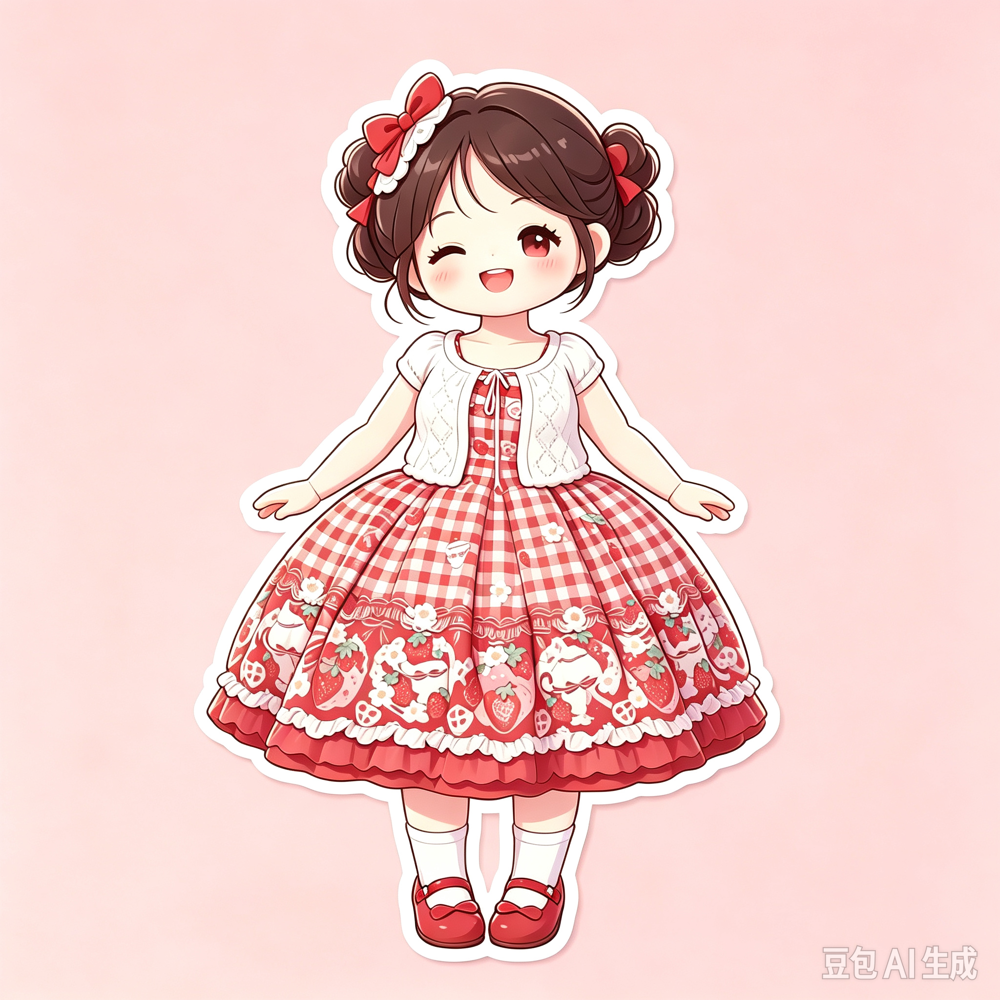

你好，我是许丽辰。一名高三物化地考生。
性格安静，内心坚韧。闲暇时喜欢傍晚散步，观察路边的花草。
在堆积试卷的日子里，依然保留自己的爱好，偶尔穿上喜欢的小裙子出门。
认真走好备考路上的每一天。

以笔为灯，静待辰光
你好，我是许丽辰。一名高三物化地考生。
性格安静，内心坚韧。闲暇时喜欢傍晚散步，观察路边的花草。
在堆积试卷的日子里，依然保留自己的爱好，偶尔穿上喜欢的小裙子出门。
认真走好备考路上的每一天。
日复一日刷题、整理错题，啃下物理、化学、地理的知识点，坚持英语听力和口语练习。
學学习之外，也会留出时间给自己。傍晚出门散步，捕捉晚风与晚霞，在平凡小事里缓解备考压力。
風不必急于求成，慢慢沉淀自己。
NOTE NO. 01长路漫漫，保持热爱与清醒。
NOTE NO. 02任凭风雨起落，守住心中辰光。
NOTE NO. 03每一个平凡的日夜，都在悄悄积蓄力量。
NOTE NO. 04



认真过好当下的每一天